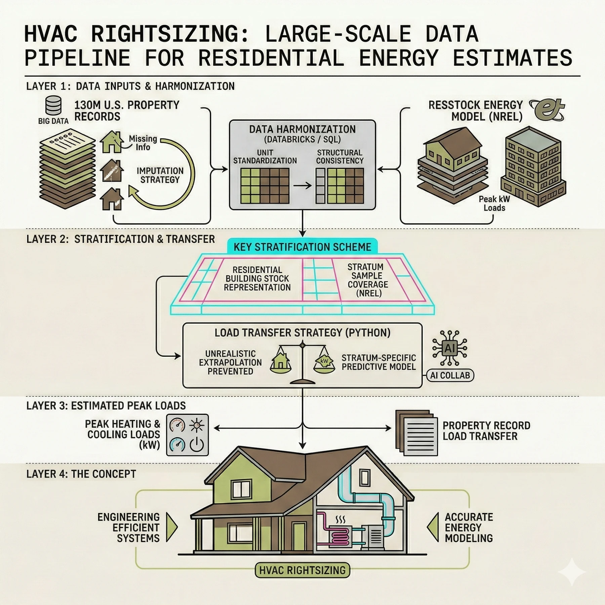

HVAC Rightsizing
2025–26A data pipeline estimating peak heating and cooling loads for roughly 130 million U.S. residential building records, built by aligning property data with the ResStock housing-stock energy model from the National Laboratory of the Rockies (formerly NREL).
- Partner
- [Research partner — Brad to confirm: name, or keep anonymized]
- Role
- Dataset review, harmonization, stratification
- Stack
- Databricks · SQL · Python
- Scale
- ~130M records · EnergyPlus-derived loads

Variables overlapping between the two datasets are identified and inventoried. Units are standardized and categorical values are harmonized to ensure structural consistency across the database.
A key stratification scheme is defined for downstream estimation. Sample coverage is verified to ensure each stratum has a sufficient number of ResStock samples.
Multiple load transfer methods are evaluated, utilizing a hybrid approach. Records are first matched within key strata, then a predictive Python model is deployed within each stratum to improve accuracy and prevent unrealistic extrapolation. Missing information is addressed using the laboratory's conditional distributions, sampled from each property's observed characteristics.
Reviewing datasets, harmonization of the two sets, and stratification of the combined set — scripted in SQL and Python on Databricks, using AI-assisted development.